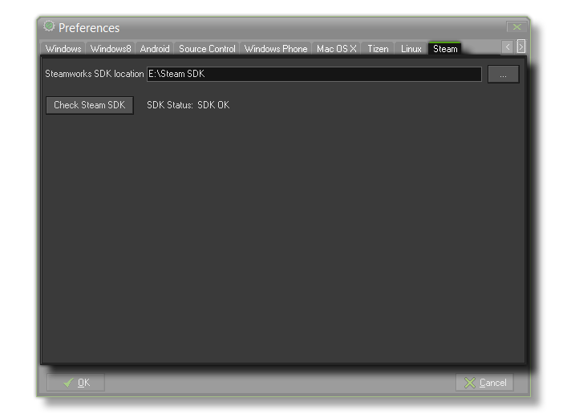

 From this tab you can
point GameMaker: Studio to the version of the Steamworks SDK
that you have installed on your development machine. This SDK will
only be available to you from the Steam Developer Area, meaning
that your game must have been approved for Steam previously to use
this (either through a publisher or through the Greenlight
system).
Once you have directed GameMaker: Studio to the Steamworks
SDK, you should then click the Check Steam SDK button to
ensure that GameMaker: Studio can communicate correctly with
the necessary SDK components. If everything is correct, you should
see "OK" displayed.